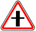

знак 1.7.1
Приложение 1 (дорожные знаки)
Закон Грузии «О дорожном движении» № 1830-რს, консолидированная редакция 25.06.2026 (Matsne, публикация 36). Юридическую силу имеет грузинский текст, русский — перевод. Источник: Matsne (рус.), Matsne (груз.).

Текст (рус., дословно)
1.7.1. «Пересечение с второстепенной дорогой», 1.7.2–1.7.7. «Примыкание второстепенной дороги» (примыкание справа – 1.7.2, 1.7.4 и 1.7.6, примыкание слева – 1.7.3, 1.7.5 и 1.7.7) – пересечение с дорогой или примыкание к дороге, движущийся по которой водитель имеет обязательство уступить дорогу. Знаки 1.7.1–1.7.7 устанавливаются в начале опасного отрезка дороги вне населенного пункта на расстоянии 150–300 метров, в населенном пункте – на расстоянии 50–100 метров.
Официальный текст (груз.)
1.7.1. „მეორეხარისხოვან გზასთან გადაკვეთა“, 1.7.2−1.7.7. „მეორეხარისხოვანი გზის შეერთება“ (შეერთება მარჯვნიდან – 1.7.2, 1.7.4 და 1.7.6, შეერთება მარცხნიდან – 1.7.3, 1.7.5 და 1.7.7) − ისეთ გზასთან გადაკვეთა ან ისეთ გზასთან შეერთება, რომელზე მოძრავ მძღოლსაც აქვს გზის დათმობის ვალდებულება. 1.7.1−1.7.7 ნიშნები სახიფათო მონაკვეთის დასაწყისამდე იდგმება დაუსახლებელ პუნქტში 150−300 მეტრ მანძილზე, დასახლებულ პუნქტში – 50–100 მეტრ მანძილზე.
Где это в курсе
Уроки
Билеты, которые на неё ссылаются (5)
По ссылкам на закон в пояснениях базы (с учётом наших уточнений онтологии).
Ссылаются в законе
Постоянная ссылка: norm/sign-1.7.1.html